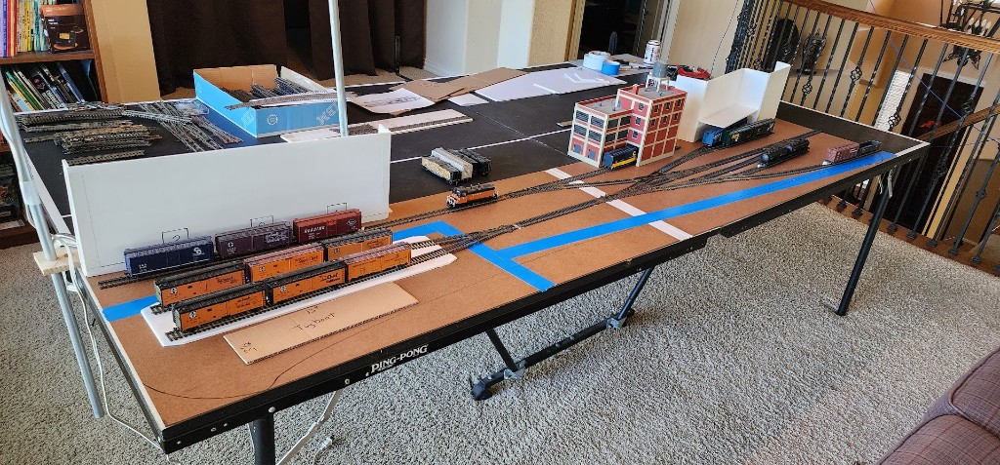
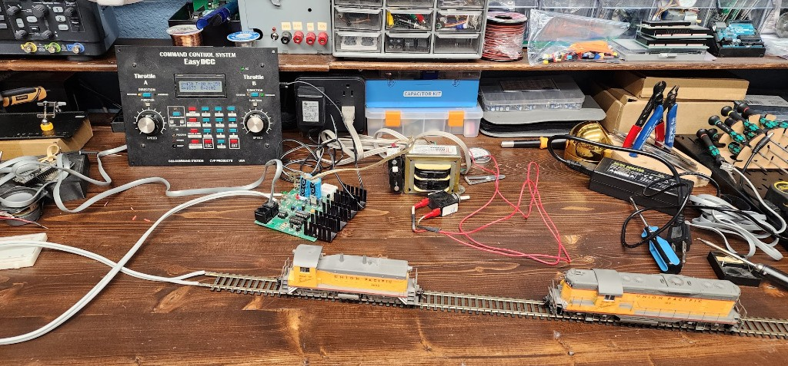
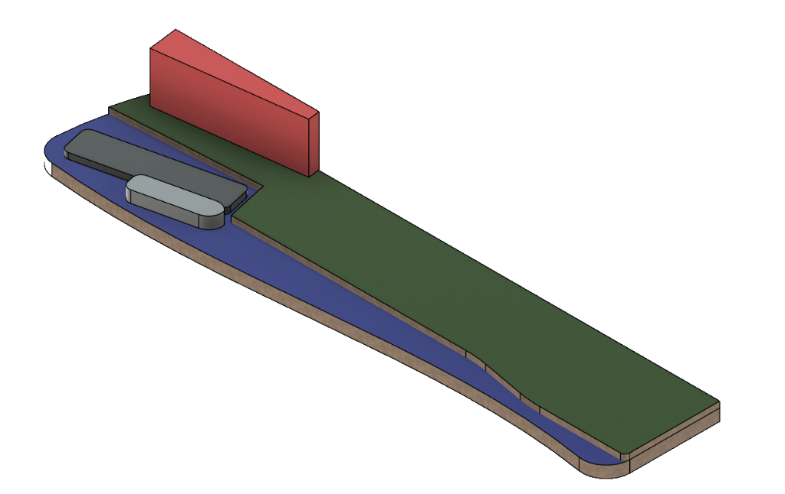

Another productive day making progress on my New York Harbor HO scale shelf layout. Today was a mix of refining the track plan, figuring out the shape of the layout, doing a little 3D modeling, and bringing some very old electronics back to life.
A Little More Room for Track
Last time, I had laid out my track on a 96" x 16" piece of Styrofoam that I was using as a temporary table. After playing around with the track arrangement, it became clear that 16 inches wasn't quite deep enough to support everything I wanted to do.
Today, I found two 4-foot pieces of 1/8" hardboard and ripped them down to 20 inches wide on my table saw. I replaced the Styrofoam with the hardboard, giving myself an extra four inches of depth to work with. That was just enough to support all the track.
Since I already had a pretty good idea of the track arrangement, I drew a straight reference line for the main track running from the car float to the opposite end of the layout. Having that line made it much easier to get everything aligned instead of constantly eyeballing the track positions.
I also used some double-sided tape to temporarily secure the track to the hardboard. That made a big difference. Now I can work on one section without accidentally moving three other sections in the process.
With the track staying in place, I spent some more time reviewing the arrangement and decided to add a second setout track for one of the industries.
That brings the layout up to 19 car spots, including the six cars on the car float.
Not bad for a switching layout that's only eight feet long!
Of course, having 19 places to put cars doesn't mean I need 19 cars on the layout at once. The fun will be in moving cars between the industries and the car float while figuring out how to work around the limited track space.
Giving the Layout Some Shape
With the track arrangement looking pretty good, I turned my attention to the front edge of the layout.
I don't want this to end up looking like a simple 96" x 20" rectangle. Since the New York Harbor waterfront will run along the entire front of the layout, I have an opportunity to make the shape a little more interesting.
I used tape to mark approximately where the water will begin and drew a rough outline of the front edge. My current thinking is to round both front corners and use a gentle curve along the length of the layout.
Nothing dramatic, just enough to give it a more natural and interesting appearance than a perfectly straight edge.
I'm still figuring out exactly how much room to dedicate to the water versus the land and track, but having everything laid out full-size is helping me visualize how it will all come together.


Bringing My EasyDCC System Back to Life
Next, I decided it was time to see if I could actually run some trains.
I pulled out my old EasyDCC command station, booster, throttle, and power transformer. The last time any of this equipment was connected was when I dismantled my previous layout in our old house, more than 16 years ago.
Needless to say, I didn't remember exactly how everything connected.
Fortunately, ChatGPT was able to help me research the system and figure out how to hook everything back up. After a little troubleshooting, including discovering that the cable between the command station and booster needed to be swapped out, I finally had power to the track.
And then something pretty exciting happened.
I actually got two locomotives moving!
These locomotives haven't had power applied to them in more than 16 years either, so it was pretty satisfying to see them come back to life.


I had to laugh when ChatGPT congratulated me with:
“Your roughly 20-year-old EasyDCC system is back in operation!”
Thanks, ChatGPT, for reminding me just how old my equipment is. And, apparently, how old I'm getting!
But the important thing is that it still works. I don't need to buy a new DCC system just to get this layout running.
Playing Around in Fusion 360
I also spent some time in Fusion 360 creating a quick mockup of the layout.
Nothing particularly detailed yet, just enough to visualize the relationship between the water, land, car float, tugboat, and industrial buildings along the back of the layout.


One thing I'm considering is using my laser cutter to cut the actual layout top when I'm ready to move beyond this temporary setup.
If I go that route, I'll need to draw the final profile in Fusion 360 anyway, so I figured I might as well start experimenting with it now.
It's also helping me think through how the different elevations and waterfront features might fit together.
That's one of the things I enjoy about model railroading. One minute you're working with wood and track, the next you're troubleshooting electronics, and then you're sitting at a computer designing something in CAD. There are so many different aspects of building a layout to keep my brain busy.
Too Many Projects, Not Enough Time
It feels good to have my brain thinking about all the different things I can do with this layout again.
After more than 16 years without a working model railroad, I'm finding myself getting excited about track arrangements, waterfront scenery, buildings, wiring, and all the little details that will eventually bring this New York Harbor scene to life.
Of course, I also want to get back to my ESP32 internet radio project in the next few days. That project was making good progress before the model railroad bug bit me again.
So now I have two projects competing for my attention.
We'll see how I end up splitting my time this weekend. That's a pretty good problem to have!